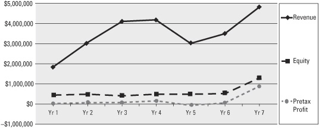
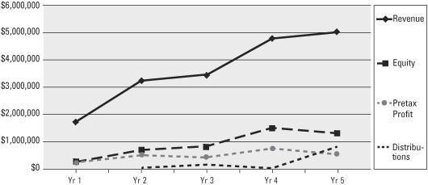
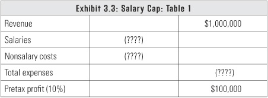
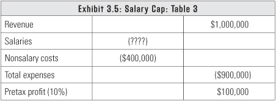
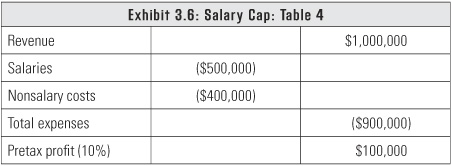
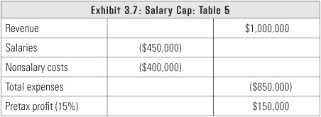
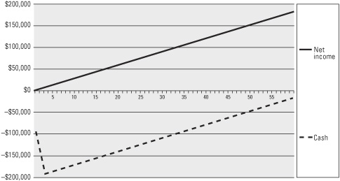
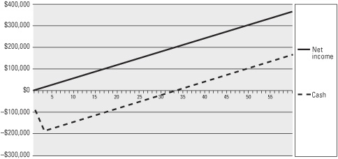
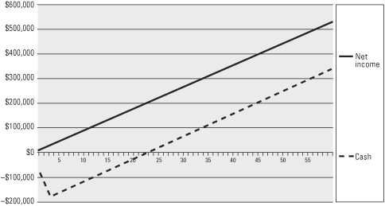

The teams that win are the teams that get the most productivity for every dollar of labor.
When businesses go through tough times, everybody thinks first about cutting costs. My experience always leads me back to one key factor: labor productivity. Nothing of value happens without labor productivity. Even something like overspending on kitchen supplies can be traced back to a lack of productivity by the person responsible for that task.
When you are below $1 million in revenue, you are a lot closer to what is happening, so you can monitor labor productivity more closely. Once you go past $1 million, your biggest challenge is getting the required productivity for every dollar you spend on labor. I refer to labor dollars instead of full-time equivalent (FTE) employees, because counting heads does not give you the proper understanding of your true profit model. Focus on your gross profit per labor dollar as your key indicator for labor productivity.
First this chapter will give you a close-up view of how two companies navigated their way through the black hole, and you’ll gain an understanding of how labor productivity and the black hole are connected. Then we’ll take a look at some strategies to manage your profits by controlling labor costs.
In exhibit 3.1, you can see that Company A, in the first year, was slightly under $2 million in revenue (solid line). You also can see that they didn’t have a lot of equity built up. Equity is your assets (what you own) minus your liabilities (what you owe). Don’t try to make it any more complex than that. Not only that, Company A’s pretax profit was close to zero.
Exhibit 3.1: Company A

Like most entrepreneurs, they think the solution to the problem of their lack of pretax profit is to grow. They make it all the way up to $4 million in revenue in the next two years. But look at their pretax profit. It didn’t go up along with the revenue. See where the revenue flattens out in Years 3 and 4? This is where I started working with the clients. I told them we had to fix their profitability before we could fix their lack of cash and their excess debt.
They made the classic mistake of adding labor to support their growth, but they failed to get enough of an increase in gross profit to drive toward profitability. They had to go back, fix the functional areas that weren’t working, and look at the business anew. They had inefficient field labor that was taking too long on simple tasks, people on payroll who were not billable, and sales people who were constantly close to, but never above, the sales goal because they were wasting time by chasing the wrong customers.
Company A set out to improve their profitability so the profit curve would mirror the income curve. In addition, they focused on making the slope of the equity curve equal to the slope of the revenue curve. To accomplish this, they drove the revenue back down to $3 million and then started working their way back up. They examined unprofitable customers and stopped taking on customers that produced low gross profit. Since their revenue declined, it gave them an opportunity to trim the staff and retain the core employees they felt were keepers.
Notice in the graph that their equity went up at the same rate as their pretax profit. Even though their revenue increased, they kept their pretax profit in the business and turned it into equity by reinvesting it in the business. You’ll see why that’s critical in chapter 4, “Business Physics: The Four Forces of Cash Flow.”
Company B took the best approach. Take a look at exhibit 3.2.
Exhibit 3.2: Company B

They started off below $2 million in revenue, and they were profitable right out of the gate. You can see that they built equity at a nice pace by being profitable and, unlike Company A, they maintained profitability as their revenue went up. Their pretax profit slowed a little bit, but other than minimal amounts they had to pay in taxes, they kept that profit in the business in the first three years.
Notice that there is a flat year from Year 2 to Year 3. When businesses have early success, they sometimes think they have reached a pinnacle and believe they’re as big as they’re ever going to get, so they just put their head down and stop thinking about growth. Notice that Company B’s pretax profit goes down between Year 2 and Year 3. This is because they hired more people to relieve some of the pressure created by the growth of the business.
The company stayed within the target of 10 percent to 15 percent pretax profit. In Year 2 they were closer to 15 percent, and in Year 3 they dropped back to about 12 percent. This isn’t a bad profit, but it’s allowing what I call cost creep. And a significant component of cost creep is labor creep, which is the biggest profit sucker out there. You’re doing all those little jobs and you start thinking, “Gee, I really don’t like doing that. Let’s hire somebody else to do that.” We all have details we don’t want to take care of. I have four kids and I changed a lot of diapers, but after I got through the first couple, I kind of got over it. Realistically, to have proper labor efficiency you have to make sure that the annoying tasks are distributed to everybody in the company. Labor creep is one of the most common ailments I see. It causes a lot of black hole struggles.
Look at the Distributions line on exhibit 3.2. Notice that Company A doesn’t have a distributions line on their graph because they had no distributions. Their profitability is below 5 percent, which is really close to zero. In Company B, the distributions in the first three years reflect only tax distributions because they listened to what I told them. They’re building the business, and until they reached their target equity levels, they left that money in the business.
Between Year 4 and Year 5 there is a jump in the distribution level. That’s a serious change because I identified that the equity level at the beginning of Year 4 was the base equity they needed to maintain. They didn’t need to hold the profits in the company any longer, so they distributed them between Year 4 and Year 5. By the way, the owners of Company B were being paid a market-based wage, so these are real profit numbers over and above market-based wages.
See the difference between Company A and Company B? Company A took the typical route of not being profitable before they tried to grow to $5 million. They did not get the necessary productivity of labor to have profit along the way. Company B followed my advice of staying above 10 percent pretax profit at every step along the way and took distributions only to cover taxes until they had nothing drawn on their line of credit and two months of operating expenses in cash. How did Company B remain profitable every year? They did not add labor until the last possible moment, and the owners, along with their management responsibilities, were still productive in the business.
As we discussed in the previous chapter, as your business grows, it is important that you hire enough people to take responsibility for functional areas that you can no longer manage. A key talent is to know what tasks to reassign to new hires and what tasks to assign to your current employees.
We have seen that you need to maximize your labor productivity to increase your gross profit, so don’t hire an employee for a function that you can do. Depending on the type of business you are in, you might be able to outsource IT, marketing, or accounting, but there are two things that are really hard to outsource: the CEO position and the sales function. I’m not a big fan of outsourcing the CEO function because somebody has to be there every day and be the boss. It’s really hard to outsource the sales function because you’re stuck relying on an outsider for a very critical component of your business. You won’t own the contacts, and that’s a really dangerous thing. Unless you have a fear of sales, don’t outsource the sales function.
One thing that happens at $5 million in revenue and beyond is that you continue to refine the management team and the people you’ve brought in to run operations, finance, sales, marketing, and so on. You may find that they hit their ceiling at some point, and you have to continually watch for that. You have to fill all of the business roles as efficiently as you can.
As I started studying labor, it dawned on me that every business is like an NFL team. Each team in the NFL operates under a salary cap. For the past sixteen years or so, every NFL team has spent exactly the same amount on labor. This was supposed to create equality among teams, but the New England Patriots won Super Bowls a disproportionate number of times from 2001 to 2009. Most people say that the Patriots’ head coach during this time, Bill Belichick, has the ability to get the most productivity in relation to the dollars spent on players’ salaries.
A coach has a set amount of money to spend. He can have a great quarterback, but if he doesn’t also spend money on a really good left tackle, that quarterback is going to be dead by the third or fourth game of the season. So he has to spend enough money on that left tackle. But wait—now he has to find somebody for his great quarterback to throw to. And he needs a running back to hand the ball to. What about the defense? It has to play well enough to stop the other team. See how interconnected these decisions are?
While looking at some news reports on the Patriots, I found a really interesting example that highlights my point. Back in 2003, the Patriots had Lawyer Milloy, a free safety who was holding out for a new contract. Milloy had a great career with the Patriots. His agent was asking for a contract worth about $4 million, which at the time was the market value of someone with Malloy’s skill set. Instead of extending his contract, the Patriots decided to cut him. Milloy’s market value wasn’t disputed in the marketplace. He got picked up by the Buffalo Bills at that price. That year the Patriots drafted a rookie, Eugene Wilson, and paid him the league minimum: $400,000 for four years. Essentially, the Patriots swapped a known commodity (Milloy, who was a Pro Bowl safety) for a rookie they thought they could develop into an effective player. Wilson didn’t start the first game, but he did play during the first game. After that, Wilson started every game for the next four years. The first year that Wilson was the Patriots’ free safety, they won the Super Bowl. At the end of Wilson’s contract, he was a free agent and the Patriots didn’t re-sign him.
The Patriots pride themselves on their ability to maximize output for every dollar they spend on labor. Their success is based on knowing when to hire veteran talent and when to develop new talent. They have been effective at both. I stress the story of developing talent here because most entrepreneurs want quick success and resist training as a viable option for growth.
I know this may sound harsh, but even though you love your employees and you want them to help you win at the game of business, at the end of the day you have a salary cap that you have to live with. Every business has a salary cap. Even an NFL team.
Determining your salary cap is the best way to achieve your required labor productivity. Imagine you’ve got a million-dollar revenue business. You want the business to have at least a 10 percent pretax profit. If you’re not at 10 percent already, you have to try to get there. If you’re already above 10 percent, you don’t want to go backward.
Take a look at exhibit 3.3 and to see how to start calculating your salary cap.

At 10 percent, the pretax profit on $1 million in revenue is $100,000. Simple math, right? You can see in exhibit 3.4 that I have $900,000 to allot to two types of expenses: salaries and nonsalary costs.
Your nonsalary costs are easy to come up with. You don’t need a consultant to figure it out. The data is in your numbers and you just have to do the math. Ask yourself how much you need for rent, office supplies, telephones, products, and all the other essential things. Costs that stay essentially the same regardless of sales volume are referred to as fixed costs. If you sell goods, your nonsalary costs include the cost of goods sold for the products you sell. You can predict that number because you know what you have to buy. These costs will vary based on sales volume, so they are referred to as variable costs. There are also step-variable costs. That means you have to add the cost before you can fully use the cost you are adding.
Entrepreneur: Would office space that you rent be an example of a step-variable cost?
Greg: Exactly! Your rent is fixed until you outgrow your space and you have to either move or add on. But people are an example of this cost, too. That’s why I say that you should add that person at the last possible moment. You don’t get full productivity out of a new hire right away, but you get productivity to a point. If I hire a sales manager to manage two salespeople, I get some productivity, but I do not maximize the value of that sales manager until he or she is managing eight to ten salespeople.
Let’s say the number you came up with for nonsalary costs is $400,000. Exhibit 3.5 continues our calculation.

Now you can plug in the salaries number, as shown in exhibit 3.6. A little quick math says you have $500,000 to spend on wages. Remember, your market-based salary is included in that $500,000.

It doesn’t matter if your employees are part-time, full-time, or if you’ve hired your cousin or your spouse. You have a $500,000 salary cap. It doesn’t matter if you give incentive pay or hourly pay. The sum of all W-2s at the end of the year cannot exceed $500,000. It’s no more complex than that.
A classic example of someone who ignored the salary cap is a client who did around a million dollars in revenue but just broke even, and he was happy that he didn’t owe any taxes. You already know how I feel about that. I said, “You’re one bump away from being out of business. You have two choices. You have to cut $100,000 in salaries or you have to not spend a single dime until you produce $100,000 more in gross profit. I don’t care which one you pick, but you have to pick one of these two options.” A couple of days later, he called and wanted to talk.
Client: I have this employee that I’ve been spending $75,000 a year on. We’re trying some new businesses, but we haven’t been able to build anything substantial with this employee.
Greg: Great! You found $75,000. Now you need to find $25,000 more.
The client made the adjustment and has been at 10 percent profitability ever since. It is so painfully simple, but everyone wants to make it hard. I guarantee you that if I do those calculations for you, I won’t have to tell you who’s sucking up the oxygen. You already know.
And you know what? It might even be you. If that’s the case, then you need to be realistic. You need to get the most productivity for your labor dollars, and that includes your own salary. As entrepreneurs, we all want our businesses to work. But if you’re going to fly in for two days a month and still draw a full salary, you’re lying to yourself, so quit taking a salary out of the business. There’s nothing wrong with being an investor and just showing up for board meetings with the executive team you hired to run the business.
Our salary cap example is based on 10 percent pretax profit, but you want to get to 15 percent pretax profit. When you get there, you can do another salary cap calculation like the one in exhibit 3.7.

This calculation says that your new salary cap, at 15 percent pretax profit, is $450,000. From looking back at exhibit 3.6 we can see that at 10 percent, pretax profit it was $500,000, so now you’re over the cap by $50,000. At 15 percent, your pretax profit on $1 million in revenue is $150,000. At 10 percent, it was $100,000. This tells you that 10 percent pretax profit is your bottom line barrier because you need that difference of $50,000 to cover your salaries.
When you get to 15 percent pretax profit, you can add employees to drive your profit back down toward 10 percent, and then you can grow it back to 15 percent again. Your pretax profit and salaries are in flux as your salaries go up and your profit goes down. You can continue this process to get a nice upward-sloping revenue curve like Company B’s earlier in the chapter.
If you try to raise your salary cap when you have only 10 percent pretax profit, you’ll drive your profit down toward 5 percent, which is the danger area. When I do a salary cap computation for a client, I bracket it with a minimum acceptable target and the maximum target, and I make sure their salary cap runs between those two numbers.
Since managing the salary cap is the key to improving profit, I usually have to reinforce the need for higher profits as an incentive to make the hard decisions on salaries. When I speak to entrepreneurs, I show them three examples of cash flow versus profit: 5 percent, 10 percent, and 15 percent pretax.
Assume the following about each example: This is a service-based business that brings in $1.2 million in revenue a year. By the time they take into account federal income taxes and state taxes, their tax rate is 40 percent. The business spends money on its operating costs for a month and then sends invoices at the end of the month. The next month they do the same. By the middle of the third month, they finally get paid for the first month’s invoices. That’s the billing cycle in the real world: bill at the end of the month and get paid in forty-five days.
Exhibit 3.8 is the 5 percent pretax profit graph. The solid line represents cumulative profit and the broken line represents cumulative cash flow.
Exhibit 3.8: Cash Flow vs Profit at 5%

This business is immediately $95,000 in the hole in the first month. They go close to $200,000 in the hole before they start earning their way out of it. Notice that it takes over sixty months to break even.
If I change the pretax profit to 10 percent, notice what happens in exhibit 3.8.
Exhibit 3.9: Cash Flow vs Profit at 10%

The profit line looks great, but the company is still almost $200,000 in the hole. The cash curve is better, and they hit the breakeven point at about thirty-three months instead of at sixty-plus months. All they changed was one thing: they made all their business decisions based on hitting their profit target.
If they make 15 percent pretax profit, look what happens in exhibit 3.10.
Exhibit 3.10: Cash Flow vs Profit at 15%

Basically, the same thing happens again, but their pretax profits are much higher. They still fall into the same initial hole, but they cross the breakeven point in twenty-one months.
In these examples, you can see that you need to hit at least 10 percent pretax, so that $100,000 pretax profit is definitely the minimum target for a business that is at $1 million in revenue.
This is why profit matters. Everybody is going to dig that cash deficit hole in the beginning. It’s just a matter of how fast you can get out of it. There are really only three ways to remedy the cash deficit hole:
This brings to mind a dastardly little thing that happens a lot. You start a company and get a lot of business early because of your credibility and personal charm. Because your customers like you, you may be able to talk them into making a deposit as an advance payment. But that doesn’t last very long. Most customers will stretch out their payments as long as possible. Your big-time competition will offer to extend credit to these customers because they can afford to wait for payment. This is one of the barriers to entry that prevent new companies from being competitive.